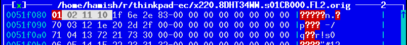

class: center, middle <!-- * Introduction --> # My fight with modern laptops LCA2017 .footnote[Hamish Coleman - hamish@zot.org] ??? - questions, please raise your hand and I will stop shortly - slides available, etc - I'll show any urls again at the end, too FIXME - put the talk name as a header on all slides?? --- <!-- ** Who am I --> # Who am I - Systems Programmer by trade - Pull apart hardware as a hobby - Just a grumpy guy, annoyed by change - ... but I want be 'constructive' about it ??? - The description says I live in Melbourne, but these days I live in a small box in Hong Kong - I dont work for Lenovo (or IBM) - I never have - I was just a fan of their hardware - You might call it Dev Ops these days I've been calling it Sys Admin for years - Dissassembling things, finding out how things work, this is all part of the same thing for me. - Sometimes I even put them back together - it seems this is the room for grumpy old men who dont like their laptops this morning.. --- class: center, middle  <div class="caption">https://xkcd.com/1770/</div> ??? - Of course, there is an XKCD for this - .. But - concerned about the pattern that the computer/design industry is taking (cheapening and mass-producing/lowest-common-denominatoring) NOTE: be aware of the timing needed to read the comic - say min 20sec --- <!-- ** What is in this talk --> # This talk - What is wrong with current Laptops? - Investigate the hardware, how much can I change it? - Reversing firmware tables - Can I make the flash tool work from Linux? ??? TODO: these set of notes dont give me hints on what to say (yet) - There are four main points that I think I can get across - Not too much time on what is wrong with the laptops - Encourage people to be able to make changes to the hardware around them - get people back into the mentality of questioning their 'perfect', 'shiny' new toys - "what can I change??" - Actually changing/fixing the firmware -- radare patches -- trying to hit the target audience for your project -- *SPOILER* - No - What next? FIXME - another idea from audrey ??? TODO: these set of notes dont give me hints on what to say (yet) - Going further with exploration and possible exploitation -- Write a KVM-based hypervisor --- <!-- ** Why did I do it (what motivated me) --> # Why did I start my fight? - Today's hardware is just not for me - To be fair, I'm a small group - Is it new features at the *expense* of old ones? - You should feel like you *could* do something about it ??? - Increasingly, hardware doesnt seem to meet my requirements - evolution of hardware - beyond a certain point smaller is not always better - I certainly dont want cheaper at the cost of quality - touch on open source, helping making changes - There is a constant and growing feeling that none of the designs are catering for my needs and wants. This could be because I am old and crusty, but the point is that I dont like feeling that way. I assume that others have had the same feeling and want to encourage you in doing things about it. - Note, I say *could* - I dont expect everyone to want to, or to succeed. - could do a quick room survey and note the number of thinkpads diminishing over the years --- <!-- *** laptop evolution --> # Laptop evolution - Keep getting smaller - this is good - At the expense of ports, durability, keys - this is bad ??? - Historically, I have just looked at the Thinkpad laptops - Looking at other ranges, I see many of the same things - starting sooner, perhaps - Smaller means a lot of things, many of which I can cope with - sometimes smaller just means less room for the battery - which is bad --- <!-- **** my laptop opinions. computers: travel, workstation, other. --> # My ideal laptop - easily portable - suitable for all-day use - (all-day battery would be nice) - Runs Linux - No blobs - Actually is a laptop - Durable ??? - FIXME I had some idea to talk about the three use cases I saw for laptops - Portability speaks to the maximum size - not a portable gaming rig and certainly not large enough to fit a numberpad! - all-day use is about erganomics, which - amungst other things - relates to screen quality and since I will be typing all day - the keyboard - Beyond (say) 4 hours, battery life is more something nice to have, with the assumption that if I am working all day, I am at probably near a power point for some of that time. Of course, it has to reliably hit the 4 hour mark. - runs linux, should be obvious - Even the Purism people have blobs that they were not able to remove from their laptops (eg: M.E. blob) - And the Novena isnt actually a laptop - durable - survives being used as a laptop - I have had a number of laptops that hit almost all of that (over the years), all from the thinkpad lineup - which is why I kept looking at that range. - note that price is not on that list - maybe can mention the chromebook here, too - as an exception to the pricepoint (if so, be sure to debian "not chromeos") --- <!-- *** scope - reducing it make it possible for me --> # Scope - Washing list of changes I want - Skills to do only one or two things - Look at my needs and focus on the important things - What could I do about the Keyboard on newer laptops? ??? - So, now that I have a list of things I dont like, what can I do - I'm not bunnie or purism - I cannot build a whole laptop - so, reduce the scope to the minimum feature set - all the modern laptops I looked at have keyboards I dont want - Could I do something about that? --- <!-- *** keyboard - show evolution of thinkpad keyboard - one slide with every keyboard I can find - up to x220 - 701c, 600x, r40, z61m x30, x61t, x220 --> # Thinkpad Keyboards - "classic" <table> <tr> <td> <img width=250 src="thinkpad_1995_701c.jpg" /> <div class="caption">701c (1995)</div> <td> <img width=250 src="thinkpad_1999_600e_kb.jpg" /> <div class="caption">600e (1998)</div> <td> <img width=250 src="thinkpad_2002_x30_kb.jpg" /> <div class="caption">x30 (2002)</div> <tr> <td> <img width=250 src="thinkpad_2006_z61m.jpg" /> <div class="caption">z61m (2006)</div> <td> <img width=250 src="thinkpad_2007_x61_kb.jpg" /> <div class="caption">x61 (2007)</div> <td> <div class="caption">x220 (2011)</div> </table> ??? - I like to type, I do it all day - Touch-typing is a muscle memory - Yes, there are differences with all these, but relatively small ones - mention what I think the key features are FIXME - note the wedge shaped "non-island" keys, and the high travel --- <!-- - one slide with every keyboard x230 and newer --> # Thinkpad Keyboards - "modern" <table> <tr> <td> <img width=250 src="thinkpad_2012_x230_kb.jpg"> <div class="caption">x230 (2012)</div> <td> <img width=250 src="thinkpad_2013_x240_kb.jpg"> <div class="caption">x240 (2013)</div> <td> <img width=250 src="thinkpad_2014_x1g2.jpg"> <div class="caption">x1 gen2 (2014)</div> <tr> <td> <div class="caption">x250 (2015)</div> <td> <div class="caption">x1 gen3 (2015)</div> <td> <div class="caption">x260 (2016)</div> </table> ??? - Changing keyboards is going to happen, but I need to use many - Dont remove keys! - note the x240, x250 and x260 are apparently physically interchangable - point out the x1 g2 as presaging the new mac keyboard by a couple of years - point out the other bonkers keys on the x1 g2 --- <!-- - final slide holding x220 and x230 side-by-side --> # Keyboards - old and new <table> <tr> <td> <div class="caption">Thinkpad x220</div> <td> <img width=375 src="thinkpad_2012_x230_kb.jpg"> <div class="caption">Thinkpad x230</div> </table> ??? - The newest "classic" keyboard vs the oldest "modern" one - The laptop I wanted to replace is the x220 on the left --- <!-- *** assisted by physical compatibility and ease of replacement --> # Replacing the x230 keyboard - Keyboard Connector just works... <table> <tr> <td> <div class="caption">x220 Keyboard</div> <td> <img width=375 src="keyboard_conn2.jpg"> <div class="caption">x230 Motherboard</div> </table> ??? - So similar that you can just plug it in.. except for a couple of issue --- # Replacing the x230 keyboard - but.. Backlight and Burnouts <img width=750 src="keyboard_short.jpg"> ??? - I didnt notice this until much later - all the keyboards I tried this with had had the same thing happen - it turns out that there is a slightly different pinout, and they sent the high current backlight though the connector. - Someone else pointed this out - The Schematics I have are unclear --- class: center, middle <img width=750 src="keyboard_short2.jpg"> Not easy to see.. ??? - I didnt believe them until I found this small mark - Apparently, I was lucky - other people have had the burnout break the mouse buttons - There is a insulating tape hack that can be applied to stop this from happening --- # Replacing the x230 keyboard - Many of the top-row keys dont work - The Fn-Combos didnt match the icons <table> <tr> <td> <img width=750 src="keyboard_row7_x220.jpg"> <div class="caption">x220</div> <tr> <td> <img width=750 src="keyboard_row7_x230.jpg"> <div class="caption">x230</div> </table> ??? TODO - So, connectors and burnouts delt with, can I just use the keyboard? no.. - Seven-row vs Six-row keyboard - On the x220 keyboard,.. - - Dead Keys: Insert, Home, Pause, PrtSc, ScrLk - - Wrong Keys: Del, PgUp, PgDn, Win-R, Pg-back, Pg-fwd - Fn-Combos that were not matching the icons - - Multimedia keys, Brightness, Thinklight - - Hibernate, Capslock, Screenlock, Battery - seems a bit half-arsed, really TODO - replace the x230 keyboard image with a better one --- # Replacing the x230 keyboard - Others have solved this... .center.middle[] <div class=caption>http://forum.thinkpads.com/viewtopic.php?f=69&t=104889#p718202</div> ??? - hardware hacking is possible, if somewhat error prone and laborious --- <!-- * first steps --> # Its all just software... - Schematics show all the dead keys are actually connected <img width=750 src="schematic_x230.jpg"> ??? - Its a different Embedded controller on the two models, but the key matrix has keys in every row and column, so they all must be wired up. - the Schematics agree --- <!-- ** download firmware , look for tables , hexdump/search/existing research --> # ... but software sucks <ul> <li><p>Dissassembled firmware from 10 years ago exists (http://ec.gnost.info/) <li><p>This can be used as a partial oracle </ul> <img width=750 src="firmware_gnost.png"> <div class="caption">T43 ec.s (viewed in less)</div>  <div class="caption">x220 EC firmware (viewed in HT Editor)</div> <img width=750 src="firmware_hd_x230.png"> <div class="caption">x230 EC firmware (viewed in HT Editor)</div> ??? - If this was open source, I'd just update the code - Found this assembly dump quite some time ago - - It is for T4x and R5x laptops (T43 was from 2005) - I can use the T43 dump as an Oracle to make predictions about what the key table might look like in the X220 and X230 - Match the keyboard master tables, and some other small bits - Allows the beginnings of a firmware patch - However, the x230 firmware doesnt look 'sane' (E.G: The Jump Tables are wierd) - Still have no way to install my patch --- <!-- * breakthrough --> # Breakthrough in EC firmware - Matthew Chapman blogs about Battery Hacking (See the talk before this one :-) mec-tools: - works with Thinkpad x230 EC Firmware - decrypt/encrypts - recalculates checksums ??? - compliment Matthew on his talk, thank him for his software - mention anything from his talk that seems relevant - Assuming you missed his talk, he worked out how to decrypt his thinkpad Embedded Controller firmware, patch it, re-encrypt it and add the right checksums to let it be successfully flashed - with mec tools, we can patch and successfully flash the new version - If zmatt's talk didnt exist, I would have explained how the lenovo firmware encryption worked at this point --- <!-- ** radare2 --> <h2>Reverse Engineering</h2> <ul> <li>Use Radare2 (and learn it) <li>Has support for the needed ARCompact instuction set </ul> ??? FIXME - add notes --- <!-- ** improving the radare analysis --> <h2>FIXME improving the radare analysis</h2> <ul> <li>Radare2 ARC support was quite flakey <li>Worse, the ARCompact support appeared to be half missing <li>What was there was big endian only <li>no jump delay slot handling made most tracing difficult <li>jumps and branches were not analysed, either <li>Improve illegal instruction detection - massively improving browsing <li>In the visual analysis, scrolling backwards ended up going forwards! </ul> ??? FIXME - add notes - clarify or reduce the above - mention NUXI format used by the little endian instruction coding --- <!-- ** looking for structures --> <h2>FIXME looking for structures</h2> <ul> <li>dot points </ul> ??? FIXME - add notes --- <!-- ** chasing pointers --> <h2>FIXME chasing pointers</h2> <ul> <li>dot points </ul> ??? FIXME - add notes --- <!-- ** colaboration --> <h2>FIXME colaboration</h2> <ul> <li>dot points </ul> ??? FIXME - add notes --- <!-- ** initial publish --> <h2>FIXME initial publish</h2> <ul> <li>dot points </ul> ??? FIXME - add notes --- <!-- * polishing (the thinkpad-ec project) --> <h2>FIXME polishing (the project)</h2> <ul> <li>dot points </ul> ??? FIXME - add notes --- <!-- ** audience (the people who wanted to try to use that project) --> <h2>FIXME audience</h2> <ul> <li>dot points </ul> ??? FIXME - add notes "This can be a common plague of free software: alienating people through documentation that doesn't relate to those with less knowledge and experience" https://hackaday.com/2016/12/16/installing-libreboot/ --- <!-- ** issues with distribution --> <h2>FIXME issues with distribution</h2> <ul> <li>dot points </ul> ??? - not my binaries, not allowed to distribute FIXME - add more notes --- <!-- ** supporting more hardware --> <h2>FIXME supporting more hardware</h2> <ul> <li>dot points </ul> ??? FIXME - add notes --- <!-- * How does flashing work --> <h2>FIXME How does flashing work</h2> <ul> <li>dot points </ul> ??? FIXME - add notes --- <!-- ** Lenovo tools --> <h2>FIXME Lenovo tools</h2> <ul> <li>dot points </ul> ??? FIXME - add notes --- <!-- ** reversing dosflash --> <h2>FIXME reversing dosflash</h2> <ul> <li>dot points </ul> ??? FIXME - add notes --- <!-- *** writing a simple kvm hypervisor --> <h2>FIXME writing a simple kvm hypervisor</h2> <ul> <li>dot points </ul> ??? FIXME - add notes --- <!-- *** itterating on implementing missing features --> <h2>FIXME itterating on implementing missing features</h2> <ul> <li>dot points </ul> ??? FIXME - add notes --- <!-- ** writing a device driver for real hardware --> <h2>FIXME device driver for real hardware</h2> <ul> <li>dot points </ul> ??? FIXME - add notes --- <!-- ** how is the firmware protected? is this a risk --> <h2>FIXME how is the firmware protected?</h2> <ul> <li>dot points </ul> ??? FIXME - add notes --- <!-- * next steps --> <h2>FIXME next steps</h2> <ul> <li>dot points </ul> ??? FIXME - add notes --- <!-- ** Still want a newer laptop, dont want to spend money without keyboard --> <h2>FIXME Still want a newer laptop</h2> <ul> <li>dot points </ul> ??? FIXME - add notes --- <!-- ** build a usb adaptor for the raw keyboard --> <h2>FIXME build a usb adaptor</h2> <ul> <li>dot points </ul> ??? FIXME - add notes --- # FIXME - what do you want to do ??? TODO: - encourage people to discuss what they want to change on their laptop - ask audrey for more ideas if needed on this slide :-) --- # FIN FIXME - add lots of URLs here - Tools summary <!-- things from abstract not specifically mentioned above: * various lenovo/thinkpad methods for protecting flash updates reference material: * https://hackaday.com/2016/10/28/apple-sucks-now-heres-a-thinkpad-buyers-guide/ * obviously the new macbook pro * x62 (replacement M/B for x61) http://forum.51nb.com/forum-x62-1.html * t92 (vaporware 'classic' laptop from lenovo) --> <!-- End slides. -->